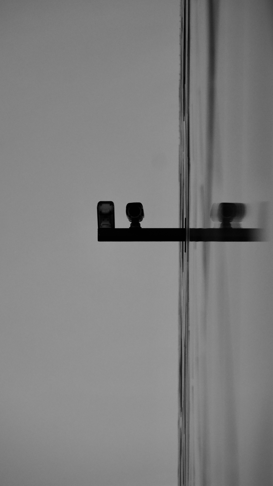

About Me
[Insert random fact here]
A bit more about me.
How It All Started
I didn't grow up dreaming of code. What really drew me in was art — I spent hours sketching, painting, and messing around with graphic design. Somewhere along the way I realized I could create the same kind of expressive work through technology, and that's when things clicked. I started learning to build websites just to have a canvas for my ideas. It wasn't the technology that hooked me — it was the ability to create something from nothing.
Outside the Screen
When I'm not building things, I'm probably outdoors. I got into hiking a few years ago and it's become my main way to reset. I also play basketball weekly with a group of friends, and I've been teaching myself photography on the side. There's something about capturing a moment that feels a lot like shipping a project — you work for it, and when it turns out right, it's incredibly satisfying.
What Drives Me
I'm naturally curious, which means I'm always picking up new hobbies — some stick, some don't. Last year it was leather crafting; this year it's bread baking. I think that curiosity is the same thing that makes me a better builder. I like understanding how things work, why people use them, and how they could be better. That's the thread that runs through everything I do.
School & Activities
Bachelor of Science in Computer Science
I chose this university because of its strong focus on hands-on learning. The moment I stepped onto campus I knew it was the right fit — the energy was electric.
- Vice President of the Computer Science Club
- Organized two hackathons with 200+ participants
- Volunteered teaching coding to high school students
High School Diploma
High school is where I first discovered my love for problem-solving. A friend showed me a basic HTML page, and I was hooked — I spent every free period in the computer lab trying to build my own.
- Founded the school's first coding club
- Captain of the basketball team
- Won 2nd place in a regional science fair
Master of Science in Software Engineering
I pursued my master's to deepen my understanding of system design and to work on larger-scale problems. The late-night study sessions with classmates are some of my fondest memories.
- Research assistant in the distributed systems lab
- Co-founded a student-run tech talk series
- Competed in three inter-university hackathons